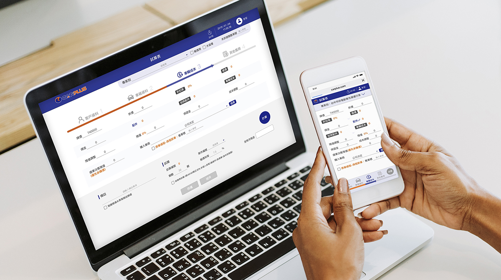
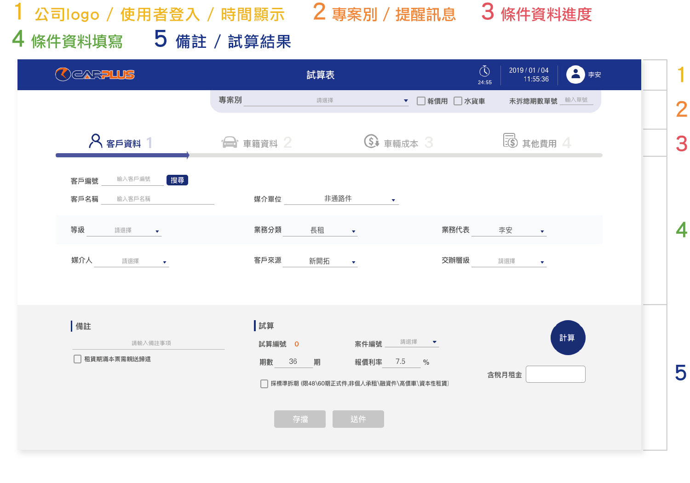
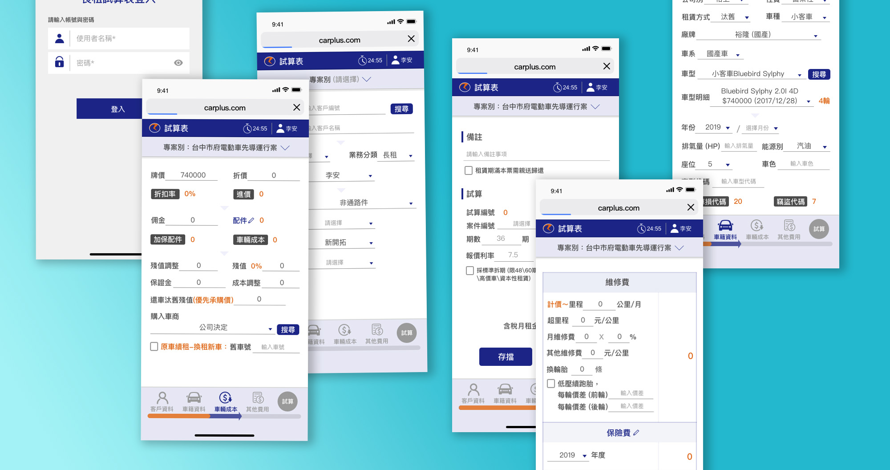
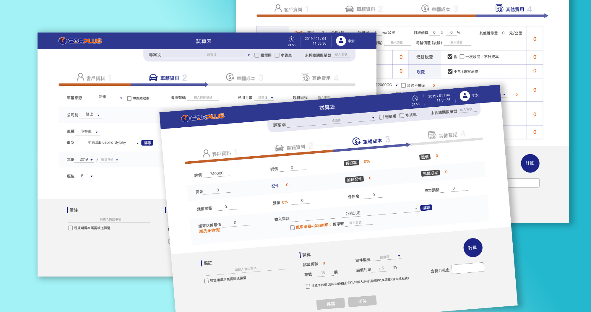

科技產品進步帶來多種裝置的使用選擇，讓公司業務人員工作模式與需求也產生變化，工作不再只侷限在公司與桌上電腦， 為提供更便利彈性的工作選擇，也期望改善舊系統難學習上手且不美觀的介面設計，需求單位提出「使用者介面優化」與「多種裝置使用性」2大要點，作為系統再開發方向。
以「操作功能或結果」來劃分定義畫面不同區域主要功能，可增加新舊使用者直覺性操作，減少學習摸索期。
介面設計以公司企業ＣＩ顏色為主色（以藍色為主色，橘色為輔色），創造系統與企業形象一致性， 避免太多繁複無意義之視覺設計，減少欄位以外之視覺負擔，提高使用者專注力。
UI介面設計 (Mobile)
UI介面設計 (Desktop)
